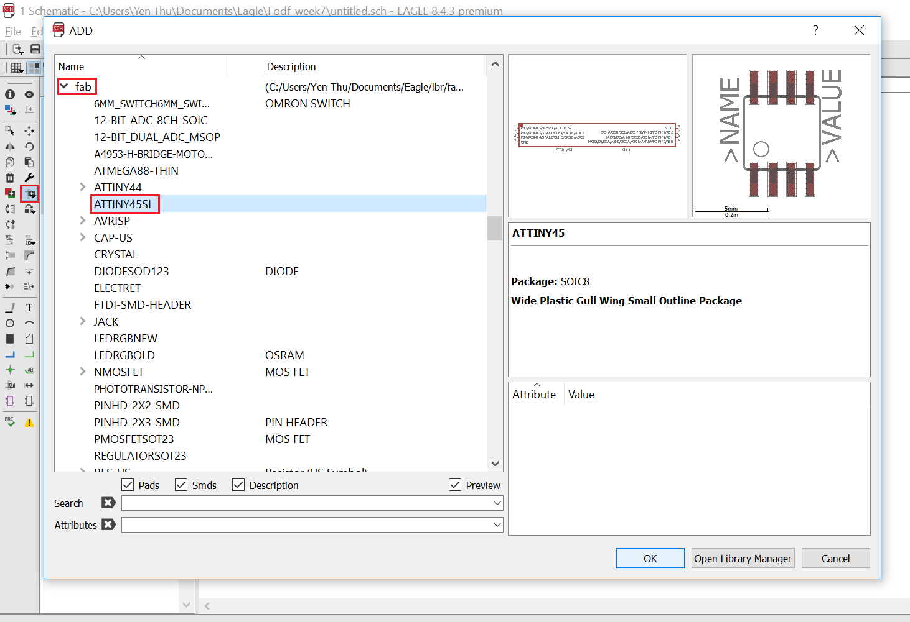
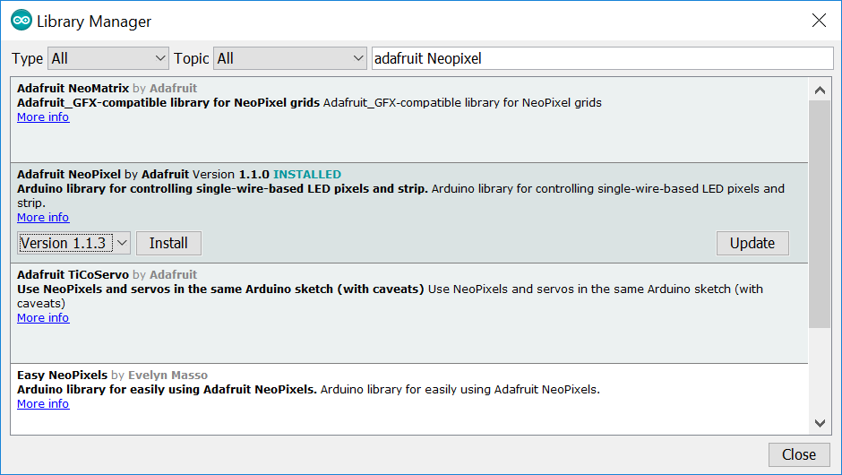
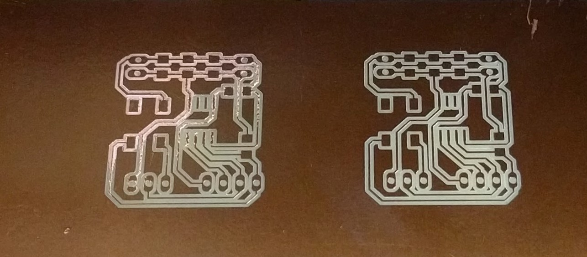

The assignment of this week is to practice PCB designing in EAGLE CAD by modifying an existing board and adding at least 1 button and 1 LED to the board. I chose to modify the Hello Board from last week by adding a button and replace the LED on this board with a RGB LED with Integrated Driver WS2812 (also known as NeoPixel by Adafruit). The idea is to control the LED to change its color with a press of the button.
In the lecture, we started out with creating a new Project. In order to do this, we open EAGLE, under the Projects -> Eagle directory we right click and choose New Project.
After giving the project a name, we need to design the Schematic (also known as the "Logic" part of the PCB). To do this, we right click on the created Project and choose New -> Schematic.
We also need to add some component library that Daniele provided us, for example, for the microcontroller, the pin headers and the button. One way to do this is to download the library, then in Eagle go to Library -> Open Library Manager:
Under the Available tab, click on Browse and look for the path to the downloaded libraries.
When the libraries are found, click on them and then press Use to use them for the project.
Now it is time to add components to the schematic, let's first start with the Microcontroller, in this case the ATTINY45. We click on the Add shortcut key on the left Toolbar. In the new ADD window, we scroll down to the fab library and choose the ATTINY45SI component.
Then we click OK and drop the component anywhere on the "canvas".
We repeat the same steps until we have all the necessary components for our schematic. For my board, here is the list of components needed:
1 x SOIC8 ATTINY45
3 x 1206 SMD Capacitor
1 x 6mm SMD tactile switch
2 x 1206 SMD Resistor
1 x 4 Male pin headers
2 x 2 Male pin headers
1 x 3 Male pin headers
VCC
GND
Here are some basic functions of the components I used:
After having all of the components on the canvas, the next step is to rename and add values to the components so that we can later easily identify them in the Board layout. To do this, we click on the Value shortcut key on the left Toolbar, then select a component and give it the corresponding value. For example, 1uF for one of the capacitor.
After assigning the values for all of the components, we click on the Name shortcut key on the left Toolbar, then select a component and give it the corresponding name, and again repeat this for all remaining components:

Now comes the wiring part. We have to connect the pin of the components in order to logically represent the circuit. One way to do this is to use the Net shortcut key on the left Toolbar and start drawing connecting lines (represented as green lines) between the pins:
Another way to do this is to draw a short wire extending each pin (out of the 2 pins that should be connected together), add a Label to each wire, then give the 2 labels the same name:
Below is the final schematic of all connections I had to wire for my board:
In order to go to the Board layout function, we click on the Generate/ Switch to board button at the top Toolbar. Since we have not created a board for this schematic before, we should click "Yes" when prompted:
Now we can see all the physical appearance of all components. One first thing I usually do before starting the layout is to turn on the Grid. To do this, we click on the Grid shortcut key on the top Toolbar. In the Grid window, we can specify the Size of the grid in various types of unit. For example, I chose 100 mil, which is also the standard distance between 2 adjacent pin headers in a pin header row, or between 2 points on a breadboard. There is also a function called Multiple which will snap the component to every point at the grid size of mutiple*size (for example, 100 mil in this case) when we try to move the component around. Another function is the Alt function which allows us to move the component to every point at the alt-grid size (for example, 25 mil in this case) if we press the ALT key while moving the component around:
Next I want to drag all components into the grid. To do this, I have to first click on the Group shortcut key on the left Toolbar, select all components, then click on the Move shortcut key on the left Toolbar, right click on the canvas and select Move: Group and bring them inside the grid:
Next I can start to do a rough layout of the board by arranging the components into where I want them to be. Then I click on the Rastnet shortcut key on the left Toolbar for the software to re-route the yellow airwires. This usually really helps in making the routes less messy to look at.
Before rastnet:Now we can start to route the board. To do this, we click on the Route shortcut key on the left Toolbar, then choose the desired width of the traces. Daniele suggested us to use 0.016 inch (or 16 mil) for our boards:
If we need to unroute a trace, we have to click on the Ripup shortcut key on the left Toolbar (next to the Route key) and select the trace we want to unroute. One important note while routing is that we should make sure the components do not overlap each other at their borders as restricted by the white markings around them. Otherwise, later on there will not be enough space to place them next to each other while soldering.
Here is the result of my board's layout:
Similar to last week's assignment, to prepare for the milling we have to export the board layout as an Image with DPI of at least 1500 in Monochrome color. Then we need to use a Photo Editing Software to crop out an image of the traces and draw the outline of the board. Here are the result of my images:
Image of circuit's traces:Now that we have the images, we need to go to the Fab Modules Online CAM Processor to generate machine codes for milling. This time I am using the Roland MDX-40 and here are the settings:
For the trace milling:- cut speed 4mm
- x0, y0, z0: 0
- jog height 5mm
- cut depth 0.0mm
- tool diameter 0.2mm
- number of offsets 4
- offset overlap 55%
For the board outline:- cut speed 1mm
- x0, y0, z0: 0
- jog height 5mm
- cut depth 1.9mm
- tool diameter 1mm
- number of offsets 1
After saving the machine codes (.RML files) I proceed to milling the board on the machine. First I have to set XY origin for the milling job. Then I have to insert the 0.2-0-5mm end tool for the first job. The good thing about the Roland is that I can use the machine's builtin sensor to set the Z origin:
However, sometimes when the PCB is not placed evenly, the Z origin detected by the sensor is also not completely perfect for all areas of the board. I will discuss this later in Section 4: Problems and Troubleshooting.
Another difference between the Roland and the Cirqoid is that we have to remember to set the spindle RPM to 15000 in the VPanel for Roland software:
After having the setups done, I start to run the milling job for the circuit traces. This was the result of the job:
Then I changed to the 1.0mm tool, set the new Z-origin and start the second job to cut out the board. This was my board at the end after drilling the holes with 0.8mm tool, with some bends at the corner because I had trouble removing the board from the bed (the double-sided tape was too strong):
I moved on with using the multimeter to check that the traces on the board are milled out correctly, i.e., no traces that are not supposed to be connected are actually connected. After this, I proceed to soldering components onto the board, here was the final result:
Board view from top:As explained before, the extra 2-pin-header row is used for soldering the 2-pin JST male connector, which I plugged it in from the bottom and made sure the polarity is correct before soldering. Afer soldering, I check with the multimeter again to make sure everything is correct, especially the VCC and GND lines are not connected, because in the end I am going to use a Lipo battery which should never be shorted.
I wired the Neopixel to the PCB and the PCB to the Arduino as in the following diagram:
Using the same setup as last week's assignment, I burn bootloader onto the ATTiny45 chip. Then I need to install the Adafruit Neopixel library in the Arduino IDE under Sketch -> Include Library -> Manage Libraries... In the Library manager, I search for the "neopixel" keyword and then install the latest version of the Adafruit Neopixel library:
Then I open the simple example sketch under the Adafruit Neopixel folder, edit some parameters in the sketch including the "number of neopixels" and the "pin number". Then I upload the sketch to the ATTINY45 using Arduino as ISP:
And now my Neopixel is lighting up:
Finally, I modified the sketch to add the function for the button so that I can switch to different color modes every time I press the button. Then I disconnect the board from the Arduino Uno and plugged in the 3.7V Lipo battery. It works in the end: (YAY!)

Besides the trouble while taking the PCB out of the bed due to the over-sticky tape, I also experienced a problem with an uneven bed, thus my circuit was not milled out evenly throughout and I had to mill the traces again. Also, this time I set the Z-origin manually instead of using the sensor because the sensor will only produce best results when the PCB's surface is even. Here is a picture of comparison:
Another problem is that while designing the board layout, I did not pay atttention to leaving enough space between the Neopixel and the button. Thus, in the end they are quite close to each other and although the Neopixel is put a bit higher above the PCB's surface, it is still not so convenient to press the button, especially if someone has bigger fingers than mine.
{kind=link}
{kind=link}